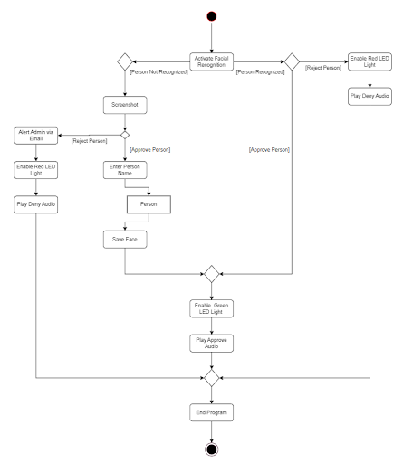
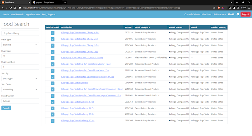
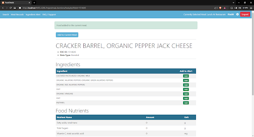
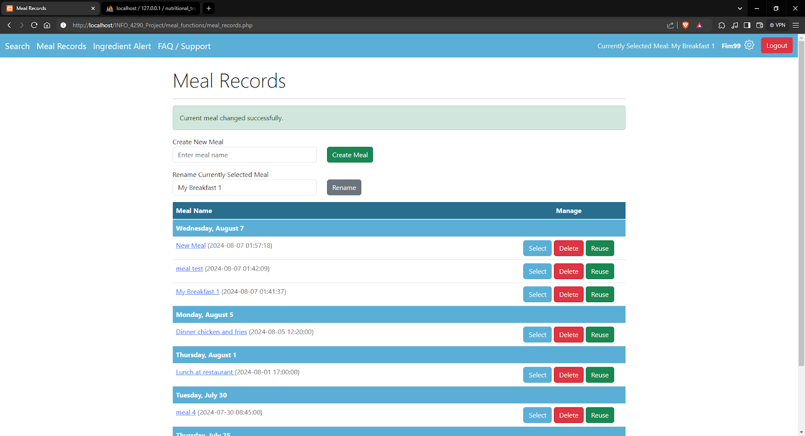

Work Experience
Web Designer - Freelance
Nov 2022 - Present- Leveraged a creative and strategic approach to design and develop responsive websites tailored to clients' needs.
- Focused on user experience (UX) and user interface (UI) design principles to create intuitive and visually appealing web solutions.
- Built from the ground up a soccer league website with a modern and engaging online platform.
- Designed a user-friendly interface for fans to access match schedules, player profiles, and live scores.
- Implemented responsive design to ensure a seamless user experience on various devices.
- Integrated social media feeds and news updates to keep fans informed and engaged.
- Resulted in a 30% increase in website traffic and a significant boost in fan engagement.
Fijian Food Vendor - Food Server
August 2024- Provided prompt and friendly service to customers, ensuring a positive dining experience in a fast-paced environment.
- Managed food orders, ensuring accuracy and efficiency in preparation and delivery to maintain high customer satisfaction.
- Maintained cleanliness of the booth, adhering to health and safety standards to ensure a safe and sanitary environment.
Costco - Stocker and Cart Attendant
Sep 2017 - June 2018- Collaborated with team members to ensure efficient and organized front-floor operations.
- Managed over 200 shopping carts, ensuring they were properly maintained and returned to designated lots.
- Contributed to a clean and safe shopping environment for customers.
Education
- Kwantlen Polytechnic University - Bachelor of Technology (Currently attending)
- Diploma in Computer Information Systems, June 2022
- Graduated from Seaquam Secondary, June 2018
Skills
- In-depth understanding of computer hardware and operating systems: Windows, Android, Linux.
- Exceptional skills in productivity software: Word, Excel, PowerPoint, Docs, Photoshop, InDesign.
- Advanced skills in computing languages: Java, HTML, C++, PHP, Python, SQL.
- Deep understanding of workflow, effective work processes, and time management.
- Experienced with troubleshooting and problem-solving.
Projects
Facial Recognition Software
- Programmed and implemented facial recognition software using Raspberry Pi and Python.
- Utilized Face Recognition Python library integrated with self-made classes.
- Capable of denying and approving faces based on a blacklist of face images through buttons connected to Pi.
- Features live feed of the face and real-time face detection through a webcam connected to Pi.
- Stores user face images and blacklist status for future use of the system.

Website Application for Meal Tracker
- Designed and developed a comprehensive meal tracking web application using HTML, PHP, and SQL.
- Implemented functionality for users to create accounts, with encrypted data storage and robust input sanitization to ensure security.
- Enabled users to add foods to meals, with real-time display of nutritional information, leveraging an optimized API for accurate food data retrieval.
- Integrated with an SQL database to efficiently manage CRUD operations for foods, meals, and user accounts.
- Conducted thorough testing and documentation to ensure application stability and maintainability.



Interactive 2D Action Game
- Developed a 2D action game using Processing, a programming environment similar to Java, focusing on object-oriented design.
- Implemented game mechanics including character movement, collision detection, and interactive elements.
- Managed game state and progression with efficient data structures and event-driven programming for seamless gameplay.
- Designed custom graphics and animations, enhancing the game's visual appeal and user interaction.
- Conducted thorough testing and optimization to ensure smooth, responsive, and enjoyable gameplay.